FLAT5
2024
Game Environment
Before moving abroad for my studies, I wanted to capture a place that was significant for me during my high school years. By fully modelling this real place I was able to capture it through the lens of my perception, instead of aiming for a fully realistic copy.
Working in 3D allowed me to emphasise important elements such as objects, light, textures and details that associated with the place. As both places and people continuously transform over time, this work became a way of preserving a moment.
Software: Unreal Engine 5, Blender, Substance Painter, Photoshop
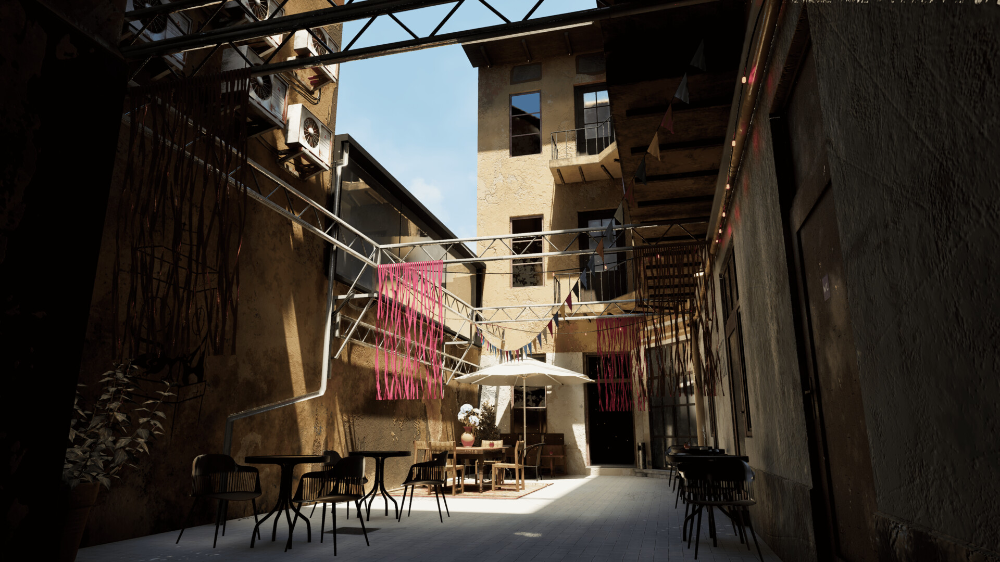
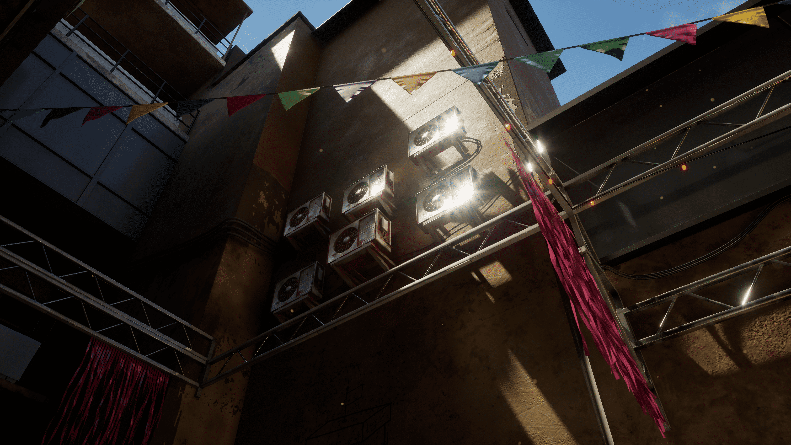
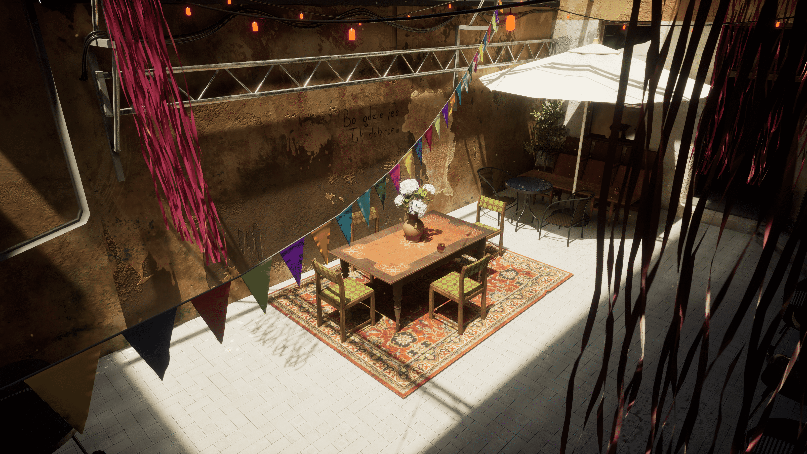
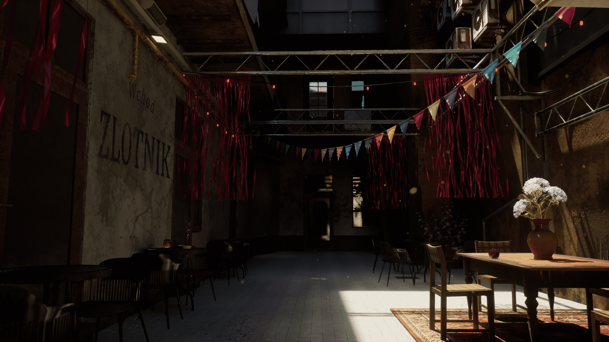
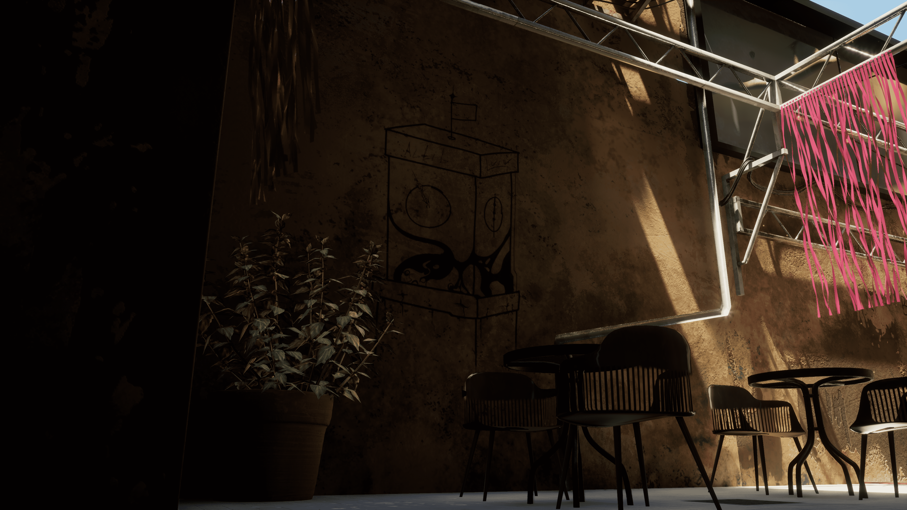
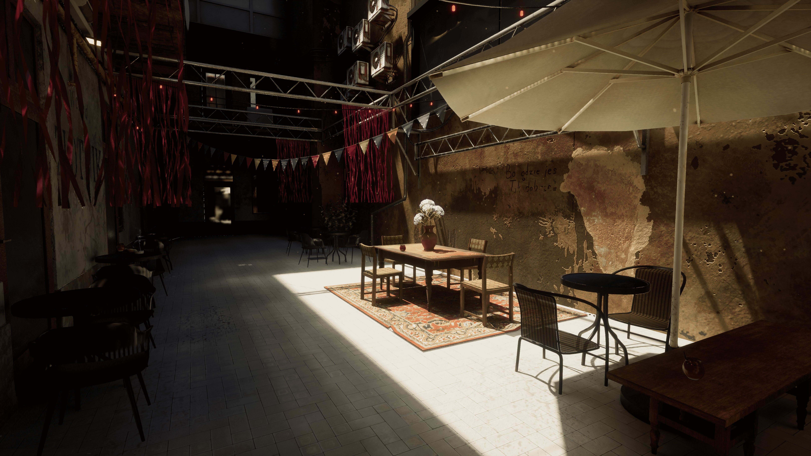
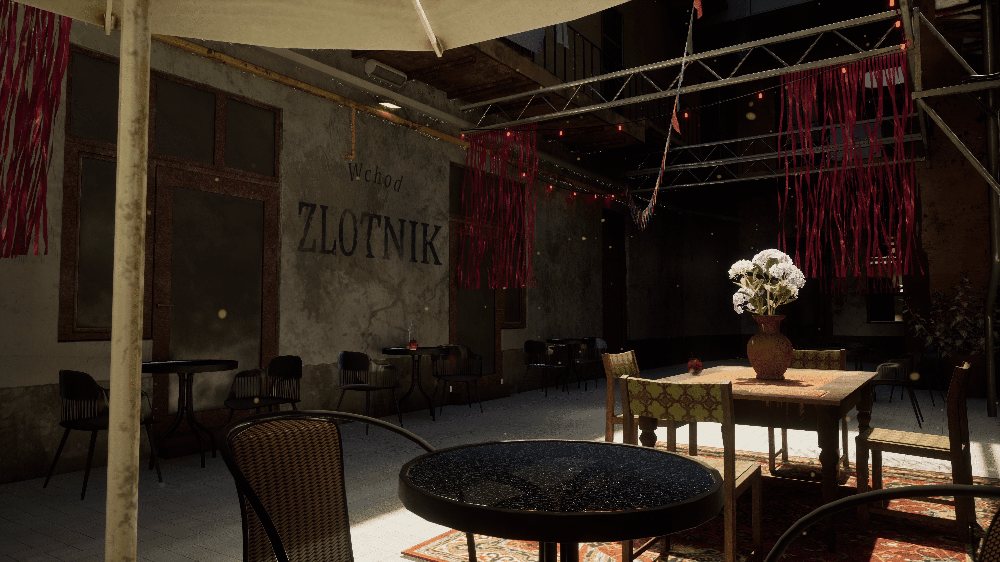
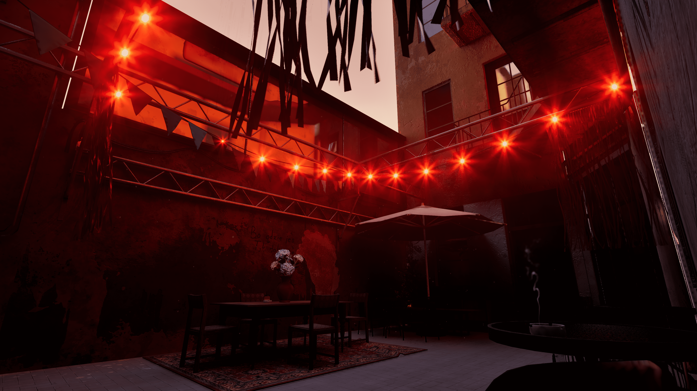
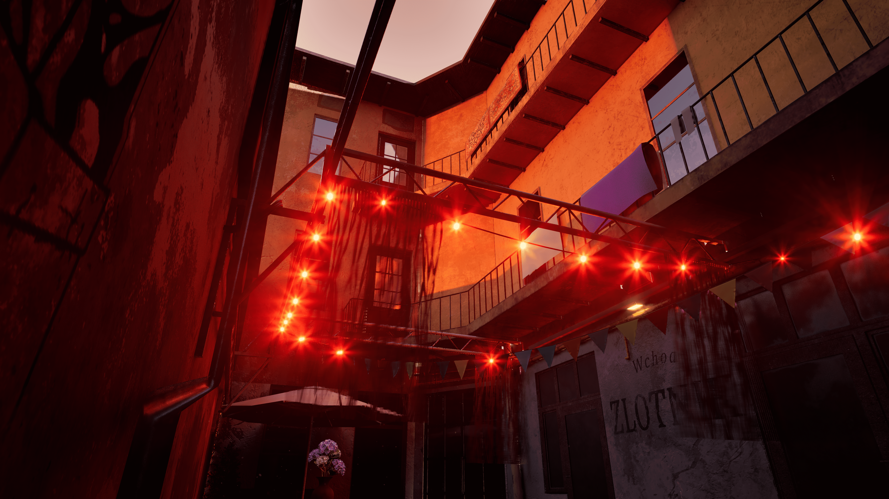
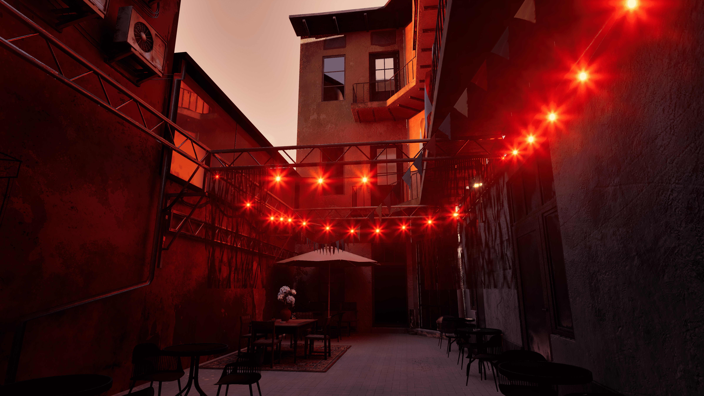
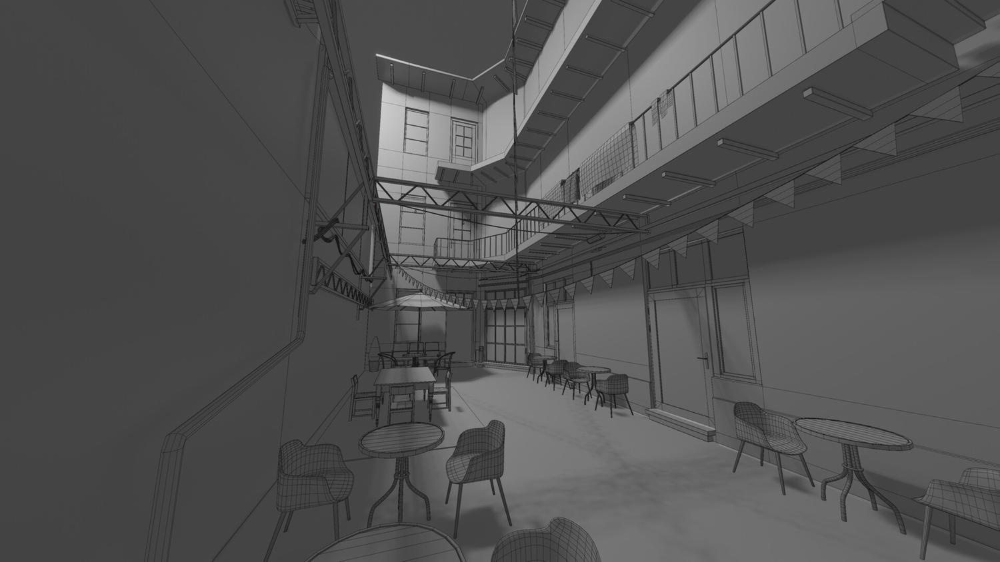